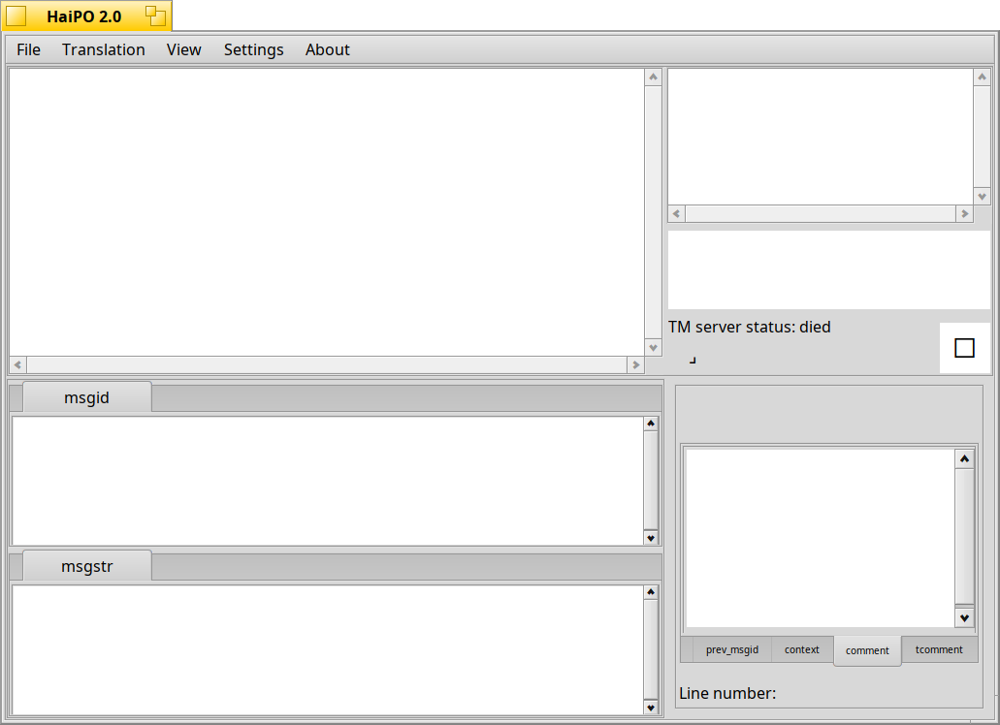

Topics
Interface
The interface
A quick look at the interface:

On the top side there are 5 menus:File
Translation
View
Settings
About

Under Translation menu you can find some of the more common commands you'll use with this program:
Copy from source: (with his shortcut Ctrl+Shif+s) copies the source string to the translation field
Edit comment: (or by double-clicking the list entry) allows you to add and save a comment to the selected entry
Done and next: (shortcut: Ctrl + down/up) saves the translation to the backup file and opens the next entry
Mark/unmark fuzzy: (shortcut: Ctrl+b) Marks the list entry as Fuzzy translation or unmarks it
Previous/Next w/o saving: these allow you to go to the next/previous entry without saving the changes done. If you want to restore the translation as it was when you selected the entry press ESC.
Find source: this allows you to search for text on the entire list of entries (source strings)
Find/replace translation: allows you to search for text on the translated entries and eventually replace them.
with View you can select which kind of entries show in the list.
In Settings there are:
General: some startup settings: check if user can handle the opened po file, and check the file's mimetype
User settings: an important configuration as this data will be written to the po file
Po properties: when there's an opened po file this will show the po metadata
Po header: when there's an opened po file this will show the po header, usually a description
Spellcheck: here you can enable/disable the spell check, set the hunspell/myspell dictionary, include or exclude some chars / char's categories to help the spellchecker work better. Under these fields there's a convenient text entry that shows you the char's category of the keys you press
Translation Memory: in this configuration window you choose if enable/disable the translation memory, enable/disable a local translation memory server, the address and port to use for the translation memory service, header is the buffer size used for transmission, enable a translation memory log
Source string list: when a po file is loaded here shows up a list of original language (source) strings to translate
Translation memory list: when selecting a source string from the list, if the translation memory is enabled and set up properly, the suggestions will be listed here
The suggestion preview: when you select a suggestion, it's text will be shown here along with its carriage returns, double spaces or different spacing, which are hard to detect with bare eyes
The local TM server status: this strings informs you about the state of the built-in TM server
an animated string: which informs the program is looping fine and some checks periodical checks are in progress
A square (black empty,green ticked,red crossed) that informs your if the translation has orthographic errors
A progress bar: it indicates your progress in translating the whole file
A tabview for comments: here will appear developers comments or context comments,as well your personal comments for every single string to translate (if available)
The line number: when you select a string from the source string list, here will show up the line number where you can find the translation entry in the po file
The translation tabs: when you select an entry from the source string list, here will show up the translation (if already translated). Any change will be saved if you select another entry. Press ESC to restore to the previous state. This tab view can have multiple tabs if the source expects the plural forms (the number of tabs depends on the language)
The source string tabs: when you select an entry from the source string list, this field will show you the source text in its completeness, along with some graphical indications like: new lines (carriage returns), double spaces, different kind of spacing, tabulations etc. This tab view can have 1 or 2 tabs, it depends if the source string expects only the singular form or even the plural one
For an in-depth description of the interface click on: Interface in depth